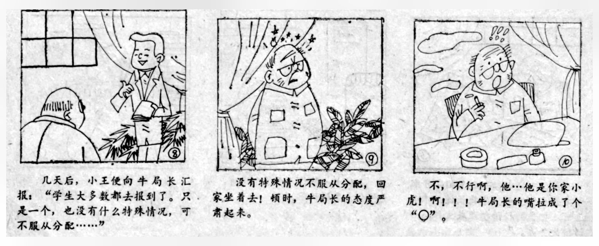

乃栋改编、绘画 《人事》1988年第5期（总第32期），第32页
秘书小王（续三）
Secretary Xiao Wang (continued, 3)
- Panel text
- 几天后，小王便向牛局长汇报：“学生大多数都去报到了。只是一个，也没有什么特殊情况，可不服从分配……”
8. A few days later Xiao Wang reported to Bureau Chief Niu: “Most of the students have reported for work. There's just one — no special circumstances, but he won't accept his assignment…” - 没有特殊情况不服从分配，回家坐着去！顿时，牛局长的态度严肃起来。
9. “No special circumstances and he won't accept his assignment? He can go home and sit there!” At once Bureau Chief Niu turned stern. - 不，不行啊，他…他是你家小虎！啊！！！牛局长的嘴拉成了个“○”。
10. “No, that won't do — he… he's your Xiao Hu!” “What!!!” Bureau Chief Niu's mouth stretched into an “O”.
- 几天后，小王便向牛局长汇报：“学生大多数都去报到了。只是一个，也没有什么特殊情况，可不服从分配……”
- Description
- Panels 8–10: Wang reports that one graduate won't accept his assignment; the chief thunders that he can go home and sit; Wang stammers that the graduate is the chief's own son, Xiao Hu.
- Artist
- Nai Dong 乃栋 (adapted and drawn)
- Published in
- 《人事》1988年第5期（总第32期）, p. 32
- Themes
- Nepotism · Paperwork and documents · Picture stories (连环画)

Cite
Nai Dong, “秘书小王（续三）” [Secretary Xiao Wang (continued, 3)], Renshi (Personnel) 《人事》, 1988, no. 5, p. 32.